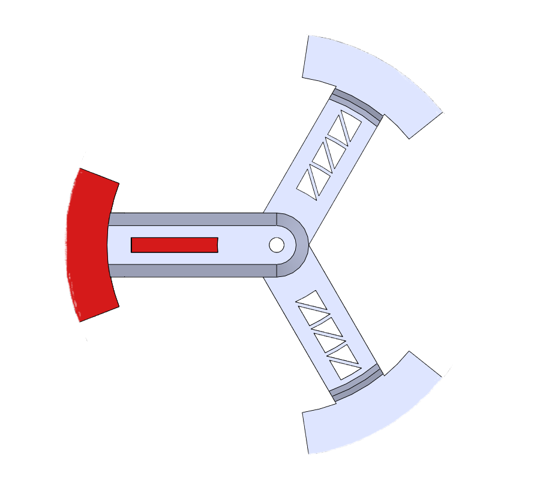

Pyrotechnic Igniter System
```As Igniter Lead, I redesigned the clamp retention system, improved firing circuitry, and developed standardized molding and testing procedures for reliable ignition performance.
Key Engineering Work
- Low-cost clamp retention redesign
- Improved vibration robustness
- Repeatability-driven test campaign design
- Documented preparation procedures
Igniter Mount Redesign
The updated igniter mount introduces a more robust and modular clamp system designed for improved retention, ease of installation, and structural reliability under dynamic loading conditions. The design focuses on consistent alignment, reduced part complexity, and improved manufacturability.




Testing & Validation
The igniter uses a molded pyrotechnic ignition compound designed to reliably initiate propellant combustion. The material is formed into a compact ignition charge and electrically fired through a resistive bridgewire. When current is applied, the bridgewire rapidly heats and ignites the pyrotechnic composition, producing a high-temperature flame front capable of initiating the motor.
The video below shows a controlled bench test of the igniter material. During the test, the ignition circuit is triggered and the pyrotechnic compound rapidly combusts, producing a brief but intense flame plume. These tests verify ignition reliability, flame strength, and combustion consistency prior to integration with the propulsion system.
Back to Portfolio ```